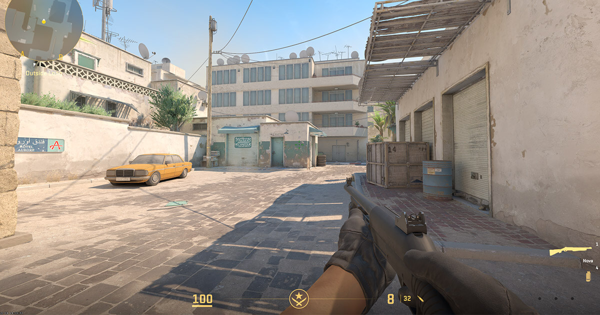
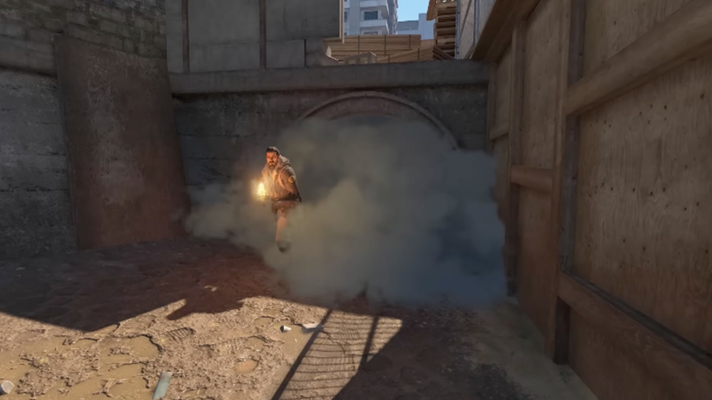

Counter Strike 2
Desde la salida de CSGO, los jugadores de esta franquicia no han tenido una mejora significativa en cuanto a el apartado gráfico ni jugable del motor SOURCE que utiliza este juego. Pero, en 2023, la compañía VALVe, lanzó al público de forma gratuita el videojuego, Counter Strike 2, con el renovado motor SOURCE 2, prometiendo unas mejoras gráficas muy notables, físicas mejoradas y un sistema de propagación de humos nunca vista en otro videojuego. Los cambios fueron muy notorios y mucha comunidad que se había alejado de su predecesor, volvió al juego por las novedades.
¡Click en la imagen para ver la página oficial de Counter Strike 2.
Esta nueva versión trajo muchísimos problemas, el día uno fue casi injugable debido a bugs y errores gráficos que a la mayoría de usuarios con ordenadores de bajos recursos les arruinó la experiencia de juego, al resto de jugadores, la optimización fue lo que les rompió su experiencia ya que, gente que poseía una Nvidia 4080, no eran capaces de superar los 30 frames por segundo. Debido a eso, el juego fue perdiendo jugadores desde el día de lanzamiento, pero por suerte pudieron arreglarlo con rápidos parches hasta que actualmente está arreglado y cuenta con una media de ~790.000 jugadores diarios.
Mécanicas principales
En cuanto a la jugabilidad, Counter-Strike no ha cambiado mucho de como lo conocemos, pero repasaremos sus mécanicas.
La base es simple, un equipo de 5 Terroristas contra uno de 5 AntiTerroristas (CounterTerrorist), formando los T vs CT. El objetivo de los T, será plantar la bomba en los puntos A o B de cualquiera de los mapas del juego y defenderla hasta que explote, en cambio, los CT deberán intentar interceptar ese plante o, una vez plantada la bomba, acabar con los T y, de forma segura, desactivarla. Esta base es la principal de cada ronda, y el equipo que cumpla el objetivo 12 rondas, gana la partida. Suelen ser partidas largas de 3 minutos por ronda.

Por lo que es un shooter competitivo es porque al contrario que juegos como Call of Duty, correr y disparar no van de la mano, las armas son precisas y requieren de paciencia y aguantar ángulos específicos. El retroceso las hace complicadas de usar para aguantar el gatillo sin pensar, pero recompensa al jugador que intenta dar balas limpias en ráfagas de 2 o 3 disparos. Además exige a los jugadores que sean precisos antes de asomar cualquier ángulo ya que con cualquier arma, un disparo a la cabeza es mortal.
Claro está que, aunque las armas suenan muy llamativas, también tenemos una serie de granadas, cegadoras, granadas de humo y cócteles Molotov a nuestra disposición que dependerá del jugador saber cuándo y en que preciso momento usarlas. Existen alineaciones en el mapa para poder cubrir determinadas áreas que nos benefician, pero es algo más avanzado.
Y, ¿Cómo manejaremos ese arsenal tan poderoso?. Bueno, pues el juego contiene una economía propia que dependerá del trabajo en equipo que se logre, dándonos más dinero si como T plantamos la bomba, detona, si asesinamos a todos los CT, si conseguimos asistencias de compañeros, y al igual con los CT.
Para finalizar, existen varios modos que no solo tratan de plantar la bomba o desactivarla. Existe el modo Team Deathmatch (Duelo a muerte por equipos) y un Todos contra Todos, además de la Workshop de Steam que nos permite descargar y crear mapas de la comunidad con reglas propias y modos y escenarios personalizados.